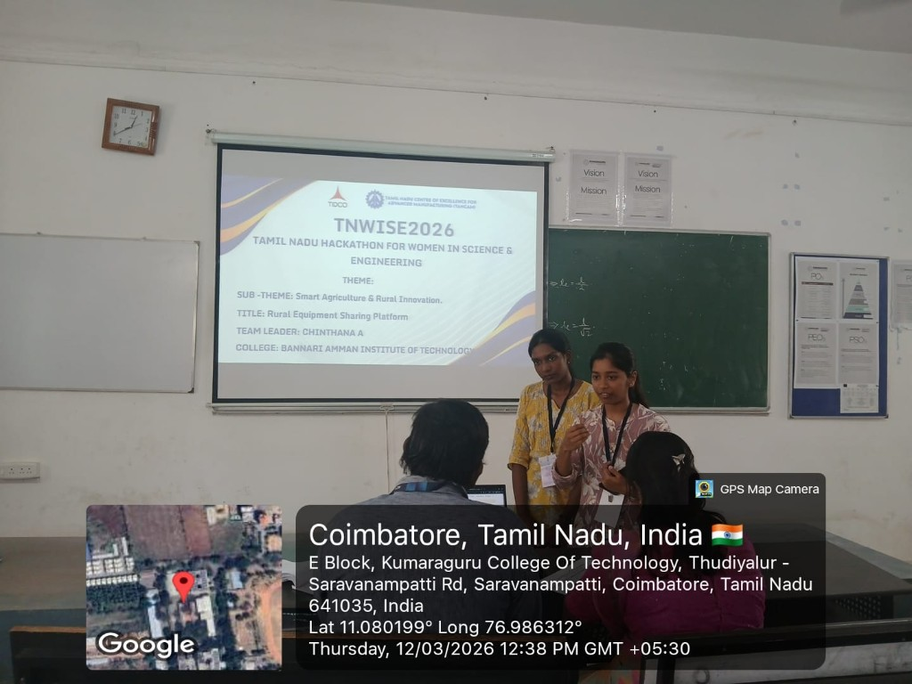

TNWISE TANCAM WOMEN'S HACKATHON 2026
Contributed to a hackathon project designed to support rural innovation by integrating technology into agriculture, making farming more efficient and accessible.
With future enhancements such as mobile application support, AI-based recommendations, and real-time tracking, the system aims to further improve agricultural productivity and empower farming communities.